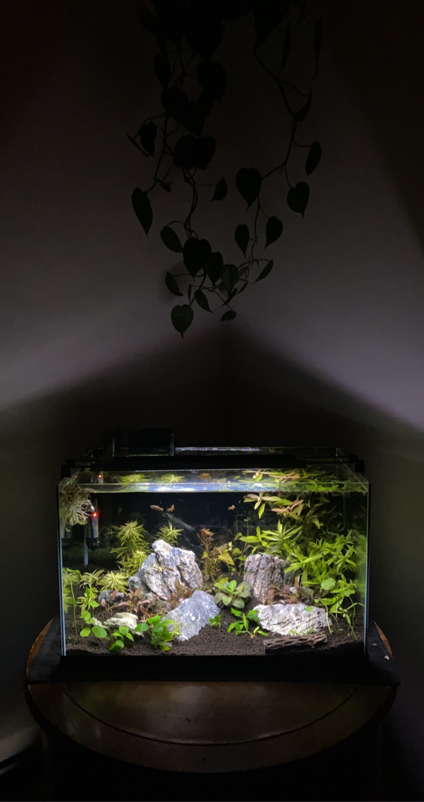

Freshwater Hardscapes

 "
"
10 Gallon Freshwater Aquarium
Inspired by the natural rocky shores of Maine, the mountainous cliffs of Oregon, and the lush rainforests of Puerto Rico, this 10 Gallon tank is a simple, yet elegant, planted freshwater tank. This tank has been home to a number of microfish, but Celestial Pearl Danios hold a special place in my heart and pair well with my favorite red plants.
10 Gallon Freshwater Aquarium
This tank is a great example of how to create a natural-looking aquascape using rocks and plants. The use of driftwood adds depth and texture, while the plants provide a lush, green backdrop. The Celestial Pearl Danios are small, peaceful fish that thrive in this environment, making it a perfect home for them.